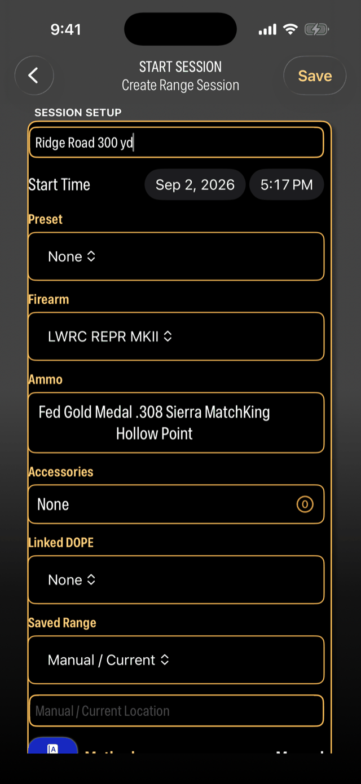
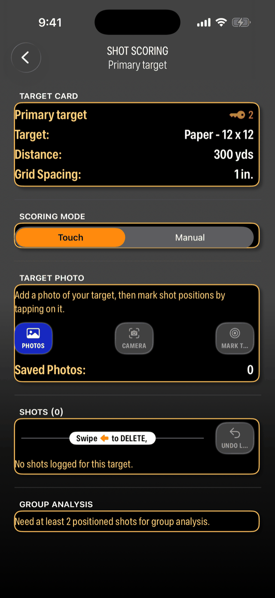
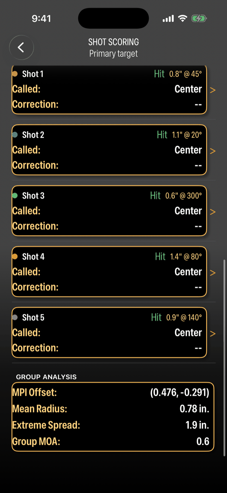
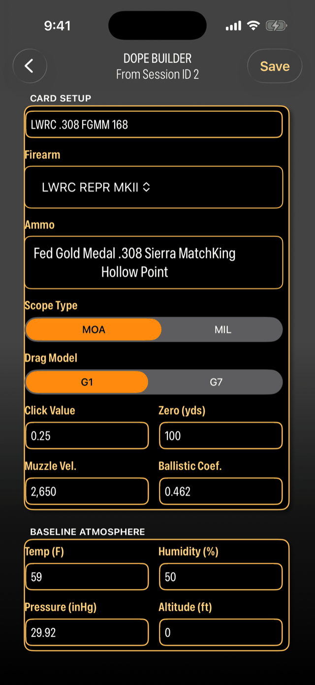
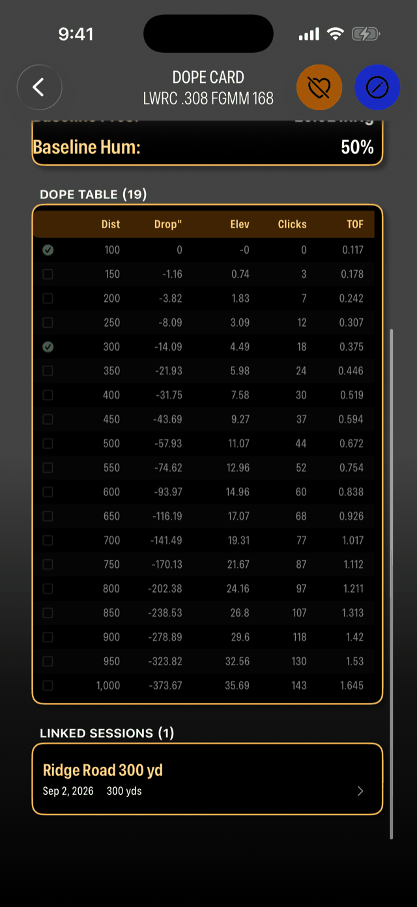
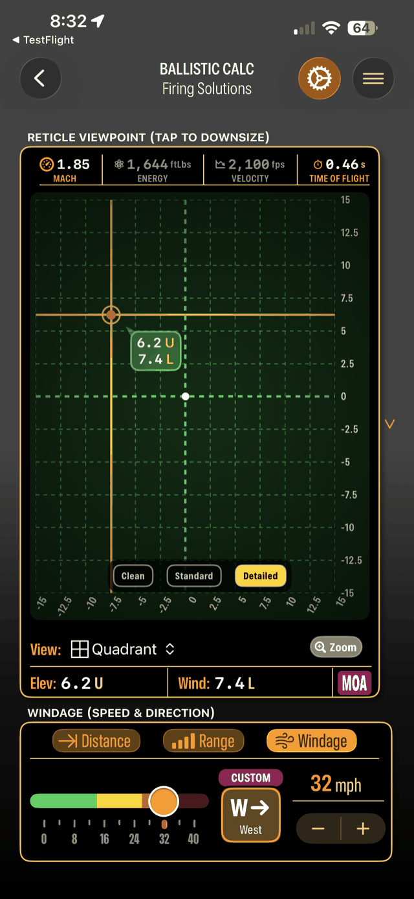

COMING TO iPHONE & iPADAVAILABLE FOR iPHONE & iPAD
Make every
range day
count.
From your first group to your next season. Bring your gear, your range sessions, and your hard-earned data together.
Built for iPhone & iPad · iOS 26 or later

01 / However you spend your time outside
Your pursuit.
Your progress.
Different reasons to head out.
The same drive to get better.
The season starts
at the range.
Get to know your setup before opening day. Keep your range notes, confirmed DOPE, and gear records together.
Prepare for the season ↗ 02 / THE DEDICATED SHOOTERBring more than
your best guess.
From weekend practice to competition preparation, record the conditions, measure the group, and confirm your data.
Know your numbers ↗ 03 / THE NEW SHOOTERStart curious.
Keep getting better.
Your first range day deserves a record, too. Pick your setup, log your session, and learn from what you see.
See how it works ↗02 / Your range day, connected
A little more intention.
A lot more insight.
From the first setup to the next trip.
Follow a session through the app.
THE RANGE EXPERIENCE / 01
Start a session.
Pick your rifle and load, set the distance, and pull in today's weather and location with one tap. That's the setup. You're on the gun.

THE RANGE EXPERIENCE / 02
Read the live hold.
See the elevation and windage to dial for today's exact distance and conditions. If the app doesn't have real numbers for your setup, it says so instead of guessing.
THE RANGE EXPERIENCE / 03
Mark the target.
Photograph the target and tap each hole. The app measures every shot from center for you. No ruler, no calipers, no math at the bench.

THE RANGE EXPERIENCE / 04
See the group.
Mean radius, extreme spread, and group MOA update with every tap, plus your hit rate for the string. Prefer a notebook? Log hits, misses, calls, and corrections by hand.

THE RANGE EXPERIENCE / 05
Build the DOPE card.
One tap from the session. The app already knows your load. Pick MOA or MIL, G1 or G7, and your full distance table is ready, tied to the range day that earned it.

THE RANGE EXPERIENCE / 06
Prove it next trip.
Next trip, the app checks the card against what you actually shot. Every distance you confirm earns its check mark. Anything off gets flagged. Every session hardens the card until it's yours, not the computer's.

Know the numbers.
See the whole picture.
The same ballistic engine behind your live hold and DOPE cards. Your rifle, your load, and today’s conditions, brought into focus.
Firing solutions
Elevation and windage holds from your firearm, ammo, and conditions, in MOA or MIL, with G1 or G7 drag models.
Reticle & trajectory
See the hold on a reticle, walk the trajectory chart by distance, and know where your load goes subsonic.
Weather & GPS
Live temperature, humidity, pressure, wind, and altitude auto-filled for your location, or enter any value by hand.


Good data belongs in your bag.
Four cards, built from your own sessions. Two DOPE references for the stock and the bag. Two session records for the bench. They arrive in the range-card update after launch: preview every design free, print and export with Pro.
FGMM 168 GR · 2650 FPS · BC .462 G1 · 100 YD ZERO
| Yards | 100 | 200 | 300 | 400 | 500 | 600 | 700 |
|---|---|---|---|---|---|---|---|
| Elev MOA | 0.0 | 1.9 | 4.6 | 7.6 | 11.0 | 14.8 | 19.1 |
| Clicks ¼ | 0 | 7 | 18 | 31 | 44 | 59 | 77 |
| Wind 10 | 0.3 | 0.7 | 1.1 | 1.7 | 2.4 | 3.3 | 4.4 |
Taped to the stock, read mid-string. Elevation, clicks, and the 10 mph wind column.
.308 Win · FGMM 168 gr · BC .462 G1
2650 fps · 100 yd zero · ¼ MOA click
| Yds | Drop in | Elev MOA | Clicks | W5 | W10 | W15 | TOF s | Vel fps | ✓ |
|---|---|---|---|---|---|---|---|---|---|
| 100 | 0.0 | 0.00 | 0 | 0.16 | 0.32 | 0.48 | 0.113 | 2468 | ✓ |
| 200 | −3.9 | 1.86 | 7 | 0.34 | 0.68 | 1.02 | 0.238 | 2295 | ✓ |
| 300 | −14.4 | 4.58 | 18 | 0.56 | 1.12 | 1.68 | 0.376 | 2128 | ✓ |
| 400 | −32.0 | 7.64 | 31 | 0.84 | 1.68 | 2.52 | 0.531 | 1968 | — |
| 500 | −57.5 | 10.98 | 44 | 1.18 | 2.35 | 3.53 | 0.703 | 1815 | — |
| 600 | −93.0 | 14.80 | 59 | 1.65 | 3.30 | 4.95 | 0.847 | 1719 | — |
| 700 | −140.3 | 19.14 | 77 | 2.21 | 4.41 | 6.62 | 1.012 | 1631 | — |
| 800 | −200.3 | 23.92 | 96 | 2.94 | 5.87 | 8.81 | 1.203 | 1512 | — |
| 900 | −275.6 | 29.25 | 117 | 3.81 | 7.62 | 11.43 | 1.409 | 1401 | — |
| 1000 | −367.9 | 35.17 | 141 | 4.83 | 9.65 | 14.48 | 1.630 | 1300 | — |
The range-bag reference. The ✓ column is every distance a real session has confirmed.
| Shot | 1 | 2 | 3 | 4 | 5 | 6 | 7 | 8 | 9 | 10 |
|---|---|---|---|---|---|---|---|---|---|---|
| Call | H | H | M | H | H | H | H | M | H | H |
10
8
80%
3.9"
Environment not recorded — indoor range. Two low left, working the trigger press.
No wind, no ballistics. Just what you shot and how it went, with the marked target.
| Shot | 1 | 2 | 3 | 4 | 5 | 6 | 7 | 8 | 9 | 10 |
|---|---|---|---|---|---|---|---|---|---|---|
| Elev | 4.6 | 4.6 | 4.6 | 4.6 | 4.6 | 4.6 | 4.6 | 4.6 | · | · |
| Wind | 0.9R | 0.9R | 0.9R | 0.9R | 1.1R | 1.1R | 1.1R | 1.1R | · | · |
| Call | H | H | H | H | H | H | H | H | · | · |
0.33" R · 0.35" ↑
0.76"
1.68"
0.53 MOA
Prone, bipod and rear bag. Confirmed 300 against the DOPE card — dialed 4.6, card said 4.58. Wind picked up from 8 to 10 mph on the second half of the string.
Conditions, what you dialed, where it landed. Group stats are computed from your marked target, not measured by hand.

Know your gear.
Keep its story.
The rifle you reach for. The load you trust. The paperwork you need. Give everything in your collection a place to call home.
Inventory
Firearms, ammunition, accessories, and supplies with photos and full detail.
Barcode scan
Scan an ammo barcode to add a catalog match and its ballistic data to your inventory.
Provenance
History, documents, ID cards, and certifications, with expiry alerts.
Insurance
Policies and insured items so the collection is always accounted for.
Your data, your call
Keep your records on your device, or sync them securely to the cloud — your choice. We use your information to power features like location-aware DOPE cards and to show you relevant offers near your range. We don't track you across other companies' apps, and we share your data only as described in our Privacy Policy — including when the law requires it.
A place for every shooter.
Free, Pro, or a limited Founder’s Lifetime membership. Final pricing and inclusions are still being shaped.
Free
Start here, free.
Pro
The full, growing BallisticTracker, by subscription.
Founder's Lifetime
One payment. A limited number of memberships, with a few limits Pro won't have.
(We're still narrowing down exactly what each tier includes and what it will cost.) Join the waitlist to hear first when the limited Founder's Lifetime run opens.
A little less typing. A lot more range time.
The current app is the foundation. These features are planned for future updates, with your records on your phone unless you choose otherwise, and clear approval for cloud costs.
AI help at the bench
Coming: aim the camera at an ammo box, no barcode needed, and the load reads in. Photograph a target and it finds the holes. You shoot. It types.
Your data stays yours
Sessions, cards, and inventory live on your device. Coming AI help will not change that. Cloud will run only when it earns its cost. You will see the receipt.
Your accuracy, over time
Coming: see how your groups trend across sessions and conditions, so improvement shows up as a line on a chart, not a feeling.
Range cards you can print
Coming after launch: DOPE strips for the stock, a full table for the bag, and session cards for the bench. Preview every design free. Print with Pro.
Our approach to coming AI featuresLocal by default. You stay in control.
Our planned AI features start on your device. When a task needs the cloud, you control when it runs and can see what it costs. These are the promises guiding that work.
Local when it's good enough. Cloud when it counts. Receipts either way.
It never spends your money silently
Local is the default. The cloud runs only when you, or a setting you can read, say so. Every time, it shows on the receipt.
Files can't order the cloud
Only what you type counts as a command. Nothing inside a document or a tool result can push your private work off your device.
Everything is written down
Every cloud decision is logged with the reason it was made. When you disagree, you change a setting instead of arguing with a black box.
BallisticTracker's coming AI features will run on that layer. Reading an ammo box, finding holes in a target, checking a load: on your device by default, in the cloud only when it clearly earns its cost. You will always see what it cost. That is where we are headed, and we will say so when it ships.
Built around the people who show up.
BallisticTracker is built for shooters who show up with a plan, log every round, and confirm their data. They are the people who shoot at your range, take your instruction, and buy your ammo and glass. We will reach them without reaching into their data: no ads, no cross-app tracking, no selling who they are. We are pre-launch, so the people who come in first get the most say in what we build.
Ranges
Coming: shooters who start a session near you will see your range and your offers. From us directly, never through an ad network or a tracker.
Coaches and instructors
Students can hand you a session report with the marked target, group stats, and the DOPE rows they have confirmed. Tell us what else you need from it.
Ammo and optics makers
Your loads in the catalog shooters pick from at the bench, with numbers they confirm on paper. Glass is next. Help us get your data right from day one.
Everyone else
Retailers, clubs, match directors, app makers. If you serve shooters and want in early, tell us what you have in mind.
Email support@ballistictracker.com with one line about what you do. A person answers.
Who is BallisticTracker for?
Hunters preparing at the range, sport and competitive shooters documenting their results, and anyone starting to build better range habits. It brings session records, ballistics, and collection management together.
What does DOPE mean?
Data On Previous Engagements. Think of it as your setup’s reference notes: the information you use at different distances, then confirm against the results of your own range sessions.
When can I get the app?
BallisticTracker is coming to the App Store. Join the waitlist for an email when it launches and first access to the limited Founder’s Lifetime offer. A launch date is not yet confirmed.
BallisticTracker is available on the App Store for iPhone and iPad.
Which devices does it support?
iPhone and iPad running iOS 26 or later. Live weather and range location work best with an internet connection and Location Services enabled.
Are the printable cards available at launch?
Printable range cards are planned for an update after launch. Every design will be free to preview; printing and exporting cards will require Pro. Session reports already support PDF export.
Your next range day starts here
Be ready
when we are.
Make the next
one count.
Get the launch email. Get first access to Founder’s Lifetime. Then get back outside.
Bring your gear, your sessions, and your progress together.
Loading the signup form…
The signup form couldn’t load. You can join by email.
Email us to joinOne email when it ships. No spam. Unsubscribe anytime.
Signing up? Watch for your confirmation email.
For iPhone & iPad · iOS 26 or later
Your privacy matters to us.